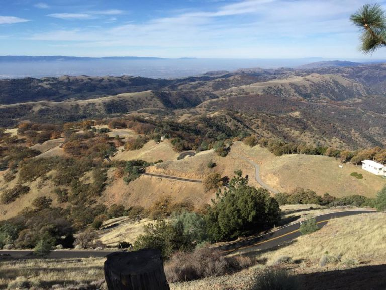

|
 |
|  |
| The spectacular view from the summit (Kevin Winterfield) |
It was absolutely perfect weather as Low-Key Hillclimbs capped off the super-successful 2014 series with the traditional Thanksgiving climb of Mount Hamilton.
In the men's division, it was a tactical race, perhaps the most tactical ever for Hamilton in Low-Key. The Squadra SF pair of Stefano Profumo and Chris Evans plus the Hanns Detlefsen broke away early from a surprisingly sedate lead group on the first climb, worked together flawlessly, and by the time they finished drilling the descent past Grant Ranch at the end of that first climb they'd gotten a lead of more than 3 minutes. The heavy hitters in the lead group, including Ryan Sherlock, Adrien Costa, and Eric Wohlberg were unable to close such a large gap over the remaing two climbs. This was a masterful demonstration of teamwork by the super-strong Squadra SF pair. Going into the finish, it was Chris Evans who took the win, followed by his teammate Stefano, then Hanns in third. The best of the rest was Adrien Costa over Ryan Sherlock with Eric Wohlberg in third, and former series overall Brian Lucido taking the next spot.
In the women's division, Amy Cameron led an excellent Janet Gardner to give Sisters and Misters 3 of the 6 podium spots between the men and women. Anne Valta of Thirsty Bear was fourth, with Jennie Phillips, also of Sisters and Misters, taking the fifth spot among the women.
In the tandem division, Paul Chuck was unable to make it, leaving Paul McKenzie with his partner from the Silver State 508, Sarah Shroer, to finish an excellent 1:17:34. Paul gained the advantage of the women's time conversion, scoring an impressive 116 points along with Sarah. The Dixon tandem of Emma and Jonathan was second despite a broken pedal, while Kim and Rich Hill were the third place tandem for the day.
In the hybrid-electric, Bill Bushnell hit the summit in 50:05, securing the overall.
Super-thanks to our lean-and-mean volunteer crew for today's climb, led by Low-Key co-founder, Kevin Winterfield. Low-Key Hamilton has become an essential Bay Area Thanksgiving tradition. And thanks to the riders for turning out in such large numbers every year.
KOM special mention qualifiers indicated with orange background.
| pl | # | name | team | cat | time | mph | fph | score |
|---|---|---|---|---|---|---|---|---|
| 1 | 400 | Amy Cameron | Sr's & Mr's of No Mercy | 35+ | 85:57 | 12.84 | 3071 | 129.97 |
| 2 | 72 | Janet Gardner | Sr's & Mr's of No Mercy | 45+ | 86:23 | 12.78 | 3055 | 129.28 |
| 3 | 519 | Anne Valta | Thirsty Bear p/b Akamai | 45+ | 86:33 | 12.75 | 3049 | 129.03 |
| 4 | 228 | Jennie Phillips | Sr's & Mr's of No Mercy | 50+ | 87:40 | 12.59 | 3010 | 127.32 |
| 5 | 501 | Shaena Berlin | MIT | 2 | 89:15 | 12.37 | 2957 | 125.01 |
| 6 | 140 | Marty Scott | LGBRC | 55+ | 89:20 | 12.36 | 2954 | 124.88 |
| 7 | 94 | Louise Kobin | solo | 45+ | 95:30 | 11.56 | 2764 | 116.57 |
| 8 | 17 | Lynn Sestak | The Brown Zone | 55+ | 96:49 | 11.40 | 2726 | 114.92 |
| 9 | 23 | Mary Ellen Allen | Sr's & Mr's of No Mercy | 50+++ | 97:24 | 11.33 | 2710 | 114.23 |
| 10 | 922 | Anne Fulton | Metromint | Retired | 98:41 | 11.19 | 2674 | 112.68 |
| 11 | 963 | Yvonne Walbroehl | Pen Velo/Pomodoro | 55+ | 101:54 | 10.83 | 2590 | 109.01 |
| 12 | 318 | Trish Pacheco | Sr's & Mr's of No Mercy | 45+ | 104:32 | 10.56 | 2525 | 106.19 |
| 13 | 906 | Kathy Camp | LGBRC | Over 30 | 109:33 | 10.08 | 2409 | 101.17 |
| 14 | 600 | Felicity Adler | Team Straggler | Meow | 111:20 | 9.92 | 2371 | 99.50 |
| 15 | 510 | Mel Dutkiewicz | Diablo | 50+ | 112:45 | 9.79 | 2341 | 98.20 |
| 16 | 962 | Janet Wagner | Sr's & Mr's of No Mercy | 55+ | 124:12 | 8.89 | 2125 | 88.87 |
| 17 | 921 | Gabrielle Friedly | N/A | Just Make It To The Top | 128:50 | 8.57 | 2048 | 85.57 |
| 18 | 612 | Andrea Ivan | Silicon Valley Triathlon | 60+ | 140:18 | 7.87 | 1881 | 78.37 |
| 19 | 924 | Maria T. Garcia de la Noceda | Grizzly Peak Cyclists | 65+ | 150:22 | 7.34 | 1755 | 72.96 |
| 20 | 79 | Christine Holmes | Low-Key | 50+ | 163:20 | 6.76 | 1616 | 66.99 |
reference time for division Women = 110:47
| pl | # | name | team | cat | time | mph | fph | score |
|---|---|---|---|---|---|---|---|---|
| 1 | 61 | Chris Evans | Squadra SF | 2 | 70:10 | 15.73 | 3761 | 132.04 |
| 2 | 122 | Stefano Profumo | Squadra SF | 35+ | 70:17 | 15.71 | 3755 | 131.82 |
| 3 | 208 | Hanns Detlefsen | Sr's & Mr's of No Mercy | 40+ | 70:23 | 15.69 | 3750 | 131.63 |
| 4 | 606 | Adrien Costa | Cal Giant | 1/Jr | 70:58 | 15.55 | 3718 | 130.49 |
| 5 | 713 | Ryan Sherlock | IdentityMind | 30+ | 71:30 | 15.44 | 3691 | 129.48 |
| 6 | 964 | Eric Wohlberg | The Brown Zone | Recreational | 71:47 | 15.38 | 3676 | 128.95 |
| 7 | 225 | Brian Lucido | Sr's & Mr's of No Mercy | 35+ | 72:32 | 15.22 | 3638 | 127.59 |
| 8 | 903 | Andrew Biscardi | VuMedi Elite Cycling Team | 1 | 74:02 | 14.91 | 3565 | 124.93 |
| 9 | 14 | Rich McLovin Brown | The Brown Zone | 35+ | 74:35 | 14.80 | 3538 | 123.96 |
| 10 | 516 | Brian Schuster | Squadra SF | 2 | 75:09 | 14.69 | 3512 | 123.02 |
| 11 | 109 | Shahram Moatazedi | LGBRC | 40+ | 77:11 | 14.30 | 3419 | 119.67 |
| 12 | 1 | Daniel Connelly | Low-Key | 45+ | 77:16 | 14.29 | 3416 | 119.53 |
| 13 | 307 | Scott Gammon | Nest | 6 | 77:36 | 14.23 | 3401 | 119.00 |
| 14 | 146 | Daryl Spano | The Brown Zone | 45+ | 77:41 | 14.21 | 3397 | 118.87 |
| 15 | 939 | Aaron McDevitt | iRT Reactor | 30+ | 78:14 | 14.11 | 3374 | 118.01 |
| 16 | 945 | Oleksiy Mishchenko | Steiner Bäckerei Wetzikon - Argon 18 | 35+ | 79:13 | 13.93 | 3331 | 116.48 |
| 17 | 222 | Joe Lemire | Hammer | 65+ | 79:29 | 13.89 | 3320 | 116.09 |
| 18 | 919 | Alexander Freund | Team Plan C | 2 | 79:35 | 13.87 | 3316 | 115.93 |
| 19 | 16 | Joe Fant | The Brown Zone | 55+ | 79:39 | 13.86 | 3313 | 115.84 |
| 20 | 942 | Miroslav Miklos | Pen Velo/Pomodoro | 35+ | 79:49 | 13.83 | 3307 | 115.60 |
| 21 | 401 | Steve Fielding | Max Entropy | 45+ | 79:51 | 13.83 | 3305 | 115.55 |
| 22 | 912 | Tom Dillon | Pen Velo/Pomodoro | 45+ | 81:18 | 13.58 | 3246 | 113.41 |
| 23 | 67 | Klaus Fleischmann | Pen Velo/Pomodoro | 45+ | 81:20 | 13.57 | 3245 | 113.35 |
| 24 | 935 | Menko Johnson | Pen Velo/Pomodoro | 35+ | 81:28 | 13.55 | 3239 | 113.17 |
| 25 | 212 | Roland Freund | Team Plan C | 55+ | 83:07 | 13.28 | 3175 | 110.85 |
| 26 | 915 | Pablo Espinosa | Squadra SF | Old And Fat | 83:09 | 13.28 | 3174 | 110.80 |
| 27 | 967 | Chris Schille | Plus 3 | 45+ | 83:21 | 13.24 | 3166 | 110.53 |
| 28 | 965 | Juan Vasquez | San Jose Bike Club | 40+ | 83:36 | 13.21 | 3157 | 110.20 |
| 29 | 511 | Alexander Komlik | San Jose Bike Club | 45+ | 83:39 | 13.20 | 3155 | 110.12 |
| 30 | 958 | Ross Tinline Tinline | Pen Velo/Pomodoro | 50+ | 83:42 | 13.19 | 3153 | 110.05 |
| 31 | 71 | Bruce Gardner | Sr's & Mr's of No Mercy | 35+ | 84:10 | 13.12 | 3136 | 109.43 |
| 32 | 119 | Jim Perreira | Team Bici | 45+ | 84:36 | 13.05 | 3120 | 108.85 |
| 33 | 75 | BIll Harkola | Pen Velo/Pomodoro | 55+ | 84:51 | 13.01 | 3110 | 108.52 |
| 34 | 916 | Bob Fetherston | Monta Vista Velo | 85:46 | 12.87 | 3077 | 107.33 | |
| 35 | 923 | Ken Gallardo | ThirstyBear Cycling | 35+ | 85:53 | 12.85 | 3073 | 107.17 |
| 36 | 227 | Christian Paquet | Grumpy Old Men (GOM) | 55+ | 85:57 | 12.84 | 3070 | 107.08 |
| 37 | 902 | Carl Andersen | N/A | Just Make It To The Top | 86:00 | 12.84 | 3069 | 107.01 |
| 38 | 706 | Maxence Nachury | SF2G | 35+ | 86:02 | 12.83 | 3067 | 106.97 |
| 39 | 125 | Matt Redmond | Squadra SF | U23 | 86:20 | 12.79 | 3057 | 106.59 |
| 40 | 22 | Bruno Acklin | Clagnuts | 50+ | 86:21 | 12.78 | 3056 | 106.56 |
| 41 | 92 | Terrance Kloeckl | Younger Next Year | 50+ | 86:55 | 12.70 | 3036 | 105.85 |
| 42 | 312 | Zachary Hilton | Sr's & Mr's of No Mercy | 35+ | 87:32 | 12.61 | 3015 | 105.09 |
| 43 | 926 | Chaitanya Gharpure | TriForce | 35+ | 88:00 | 12.54 | 2999 | 104.51 |
| 44 | 102 | Zahan Malkani | SF2G | Not Winning | 88:06 | 12.53 | 2996 | 104.39 |
| 45 | 947 | Tommy Muir | No team | 5 | 88:26 | 12.48 | 2985 | 103.99 |
| 46 | 513 | Matthew Lewsadder | LGBRC | 35+ | 88:34 | 12.46 | 2980 | 103.82 |
| 47 | 117 | Frank Paysen | Chain Reaction | 50+ | 89:18 | 12.36 | 2955 | 102.94 |
| 48 | 319 | Jeffery Rogers | San Jose Bike Club | 40+ | 89:36 | 12.32 | 2945 | 102.58 |
| 49 | 96 | Scott Krahn | LGBRC | 30+ | 89:38 | 12.31 | 2944 | 102.54 |
| 50 | 931 | Chris Kovacs | Eden Bicycles | 40+ | 89:54 | 12.28 | 2936 | 102.23 |
| 51 | 150 | Andy Sutterfield | San Jose State University | 20+ | 89:55 | 12.28 | 2935 | 102.21 |
| 52 | 105 | Scott Martin | Team Spokesman | 55+ | 90:20 | 12.22 | 2921 | 101.72 |
| 53 | 115 | Sani Obhodas | the campbell crew | 25+ | 90:21 | 12.22 | 2921 | 101.70 |
| 54 | 116 | Bill P | Sr's & Mr's of No Mercy | 50+ | 91:09 | 12.11 | 2895 | 100.78 |
| 55 | 944 | Jason Milliron | Pen Velo/Pomodoro | 4 | 91:15 | 12.10 | 2892 | 100.66 |
| 56 | 512 | Michael Kowalchuk | Meow | 91:17 | 12.09 | 2891 | 100.64 | |
| 57 | 226 | Chris Mickelsen | chris mickelsen | 55+ | 92:38 | 11.92 | 2849 | 99.12 |
| 58 | 233 | Liam Sherlock | IdentityMind | Junior | 92:39 | 11.91 | 2848 | 99.09 |
| 59 | 232 | Kieran Sherlock | IdentityMind | 45+ | 92:42 | 11.91 | 2847 | 99.04 |
| 60 | 904 | Joel Brown | Team Brown | 50+ | 92:48 | 11.89 | 2844 | 98.93 |
| 61 | 918 | Brad Fox | LGBRC | Over 30 | 92:52 | 11.89 | 2842 | 98.87 |
| 62 | 124 | Mihai R. | 35+ | 93:08 | 11.85 | 2834 | 98.57 | |
| 63 | 917 | Carmelo Figueroa Rios | Plus 3 | Breaking Old | 93:10 | 11.85 | 2833 | 98.53 |
| 64 | 952 | Mike Salameh | Cosmonaut | 60+ | 93:15 | 11.84 | 2830 | 98.43 |
| 65 | 509 | Marek Dutkiewicz | Diablo | 50+ | 93:35 | 11.80 | 2820 | 98.09 |
| 66 | 161 | Alan Weatherall | San Jose Bike Club | 45+ 4 | 93:53 | 11.76 | 2811 | 97.76 |
| 67 | 239 | James Williams | San Jose Bike Club | 65+SJBC | 94:16 | 11.71 | 2800 | 97.34 |
| 68 | 235 | Brandon Smith | Team CVC | 25+ | 94:22 | 11.70 | 2797 | 97.24 |
| 69 | 971 | Brandon West | 30+ | 95:02 | 11.62 | 2777 | 96.54 | |
| 70 | 607 | Rick Ferrell | Team Spokesman | 55+ | 95:04 | 11.61 | 2776 | 96.50 |
| 71 | 907 | Eric Chao | VSRT | 35+ | 95:09 | 11.60 | 2774 | 96.41 |
| 72 | 941 | Donald Melosh | Pen Velo/Pomodoro | 59 Years Cat 4 | 95:26 | 11.57 | 2765 | 96.11 |
| 73 | 801 | Eric Lawrence | Team Djament | 30+ | 96:54 | 11.39 | 2724 | 94.62 |
| 74 | 121 | Thomas Preisler | San Jose Bike Club | 55+ | 97:20 | 11.34 | 2712 | 94.18 |
| 75 | 911 | Vic DeOrnelas | VSRT | 55+ Cat 4/5 | 97:33 | 11.32 | 2706 | 93.97 |
| 76 | 25 | David Anderson | Team Stoke | 55+ | 97:42 | 11.30 | 2702 | 93.82 |
| 77 | 162 | Han Wen | Grumpy Old Men (GOM) | 45+ | 98:19 | 11.23 | 2684 | 93.21 |
| 78 | 914 | Christoph Erben | No team | Under 2 | 99:28 | 11.10 | 2653 | 92.10 |
| 79 | 160 | Brian Ward | Zombie Raccoon | 40+ | 99:38 | 11.08 | 2649 | 91.94 |
| 80 | 700 | Mark Anderson | suffer club | 50+ | 99:54 | 11.05 | 2642 | 91.68 |
| 81 | 909 | Gary Coman | 40+ | 100:15 | 11.01 | 2633 | 91.36 | |
| 82 | 118 | Ramon Periquet | Team CVC | 50+ | 100:59 | 10.93 | 2614 | 90.67 |
| 83 | 953 | Erik Salander | Pen Velo/Pomodoro | 55+ | 101:04 | 10.92 | 2611 | 90.59 |
| 84 | 920 | Seva Fridman | California 89 | 40+ | 101:05 | 10.92 | 2611 | 90.58 |
| 85 | 946 | Singe Morimoto | Grizzly Peak | 0 | 101:07 | 10.92 | 2610 | 90.55 |
| 86 | 110 | Ilya Moskovko | the campbell crew | 25+ | 101:32 | 10.87 | 2599 | 90.17 |
| 87 | 951 | Cory Roay | Pen Velo/Pomodoro | 55+ | 101:41 | 10.86 | 2596 | 90.03 |
| 88 | 601 | Tony Amadio | Clagnuts | 30+ | 102:35 | 10.76 | 2573 | 89.22 |
| 89 | 959 | Zachary Ulissi | MIT | 25+ | 102:35 | 10.76 | 2573 | 89.21 |
| 90 | 908 | Tom Christiansen-Salameh | Chain Reaction | 20+ | 103:09 | 10.70 | 2559 | 88.71 |
| 91 | 955 | Brian Shuman | San Jose Bike Club | 85+ | 103:11 | 10.70 | 2558 | 88.68 |
| 92 | 954 | John Schiefer | Squadra SF | 40+ | 103:27 | 10.67 | 2551 | 88.43 |
| 93 | 508 | Frank Drobot | Team Djament | 65+ | 103:30 | 10.67 | 2550 | 88.40 |
| 94 | 144 | Kevin Smith | LGBRC | 50+ | 103:43 | 10.64 | 2545 | 88.21 |
| 95 | 927 | Ryan Gibson | 40+ | 104:25 | 10.57 | 2527 | 87.59 | |
| 96 | 66 | Andrew Fitzhugh | N/A | 50+ | 104:39 | 10.55 | 2522 | 87.39 |
| 97 | 961 | James Vu | Join an Existing Team | 20 Cat 5 Just Want To PR It | 105:08 | 10.50 | 2510 | 86.97 |
| 98 | 65 | David Fitch | San Jose Bike Club | 70+ | 105:17 | 10.48 | 2507 | 86.85 |
| 99 | 960 | Miguel Vargas | San Jose State University | 30+ | 106:15 | 10.39 | 2484 | 86.04 |
| 100 | 38 | Kley Cardona | San Jose Bike Club | 50+ | 106:28 | 10.37 | 2479 | 85.86 |
| 101 | 943 | Aleksandar Milivojevic | Just Make It To The Top | 106:32 | 10.36 | 2477 | 85.79 | |
| 102 | 238 | Walter Wang | PBCC | 40+ | 106:40 | 10.35 | 2474 | 85.69 |
| 103 | 30 | Bernard Bell | PBCC | 50+ | 107:18 | 10.29 | 2460 | 85.16 |
| 104 | 35 | Nicholas Brummell | Atlas | 50+ Slower Than A Turkey | 107:36 | 10.26 | 2453 | 84.92 |
| 105 | 966 | Juavier Santiago | San Jose Bike Club | 40+ | 108:19 | 10.19 | 2437 | 84.35 |
| 106 | 949 | James Rainbow | Pen Velo/Pomodoro | 35+ Cat 4 | 108:33 | 10.17 | 2431 | 84.15 |
| 107 | 929 | Jasen Higgins | Zombie Raccoon | Just Make It To The Top | 109:02 | 10.12 | 2421 | 83.77 |
| 108 | 913 | Richard Dweck | Western Wheelers | Gobble Gobble | 110:54 | 9.95 | 2380 | 82.32 |
| 109 | 24 | Rich Allen | Sr's & Mr's of No Mercy | 55+ | 111:11 | 9.93 | 2374 | 82.10 |
| 110 | 40 | Peter Cathcart | San Jose Bike Club | 50+ | 111:16 | 9.92 | 2372 | 82.03 |
| 111 | 957 | Warrick Taylor | Pen Velo/Pomodoro | 50+ | 111:28 | 9.90 | 2368 | 81.88 |
| 112 | 948 | Marc Potts | Tomacc | Just Make It To The Top | 111:42 | 9.88 | 2363 | 81.70 |
| 113 | 26 | Stephen Anderson | Team Stoke | 20+ | 111:51 | 9.87 | 2360 | 81.59 |
| 114 | 100 | Garrett Lau | LGBRC | 45+ | 111:58 | 9.86 | 2357 | 81.50 |
| 115 | 910 | Steve D'Alencon | Pen Velo/Pomodoro | 5 | 112:13 | 9.84 | 2352 | 81.32 |
| 116 | 114 | Bart Niechwiej | 35+ | 112:18 | 9.83 | 2350 | 81.25M | |
| 117 | 933 | Marshall Jackson | Western Wheelers | Gobble Gobble | 112:23 | 9.82 | 2348 | 81.19 |
| 118 | 324 | Niall Fitzgerald | LGBRC | 25+ | 112:58 | 9.77 | 2336 | 80.76 |
| 119 | 905 | Roxy Brown | The Brown Zone | Master 45+ | 113:40 | 9.71 | 2322 | 80.25 |
| 120 | 37 | Pat Callahan | Low-Key | 45+ | 113:42 | 9.71 | 2321 | 80.22 |
| 121 | 44 | Kevin Colagiovanni | Team Dud | 30+ | 113:53 | 9.69 | 2317 | 80.09 |
| 122 | 936 | Norbert Kappel | Turkey day climber | Will Make It To The Top | 114:02 | 9.68 | 2315 | 79.98 |
| 123 | 605 | Jorge Chang | Grumpy Old Men (GOM) | 35+ | 116:31 | 9.47 | 2265 | 78.22 |
| 124 | 108 | Ed Miller | SLACer | 70+ | 117:14 | 9.42 | 2251 | 77.73 |
| 125 | 143 | Gregory P Smith | Zombie Raccoon | Dark Meat & Stuffing | 118:09 | 9.34 | 2234 | 77.10 |
| 126 | 900 | Chad Alexander | Naval Postgraduate School Cycling Club | 30+ | 118:49 | 9.29 | 2221 | 76.66 |
| 127 | 306 | Larry Douglas | LGBRC | 35+ | 121:48 | 9.06 | 2167 | 74.72 |
| 128 | 317 | Tom O'Connell | LGBRC | Just Make It To The Top | 124:14 | 8.89 | 2124 | 73.21 |
| 129 | 928 | Johnny Gossett | No team | Just Make It To The Top | 134:30 | 8.21 | 1962 | 67.44 |
| 130 | 930 | Dan Hoffman | Joel & Dan squared | Finish Alive | 138:14 | 7.99 | 1909 | 65.57 |
| 131 | 940 | Stuart McLean | First timer climber | Just Make It To The Top | 156:17 | 7.06 | 1689 | 57.76 |
| 132 | 932 | Vladimir Ivan | Team Czech | Baby-Boomer | 160:46 | 6.87 | 1642 | 56.10 |
reference time for division Men = 91:51
| pl | # | name | team | cat | time | mph | fph | score |
|---|---|---|---|---|---|---|---|---|
| 1 | 315 | Paul McKenzie | Sr's & Mr's of No Mercy | 60+ | 87:34 | 12.61 | 3014 | 116.26 |
| 626 | Sarah Schroer | Sr's & Mr's of No Mercy | 40+ | |||||
| 2 | 55 | Emma Dixon | 35+ | 95:56 | 11.51 | 2751 | 105.81M | |
| 56 | Jonathan Dixon | 35+ | ||||||
| 3 | 77 | Kim Hill | LGBRC | 40+ | 107:31 | 10.27 | 2455 | 94.06 |
| 78 | Rich Hill | LGBRC | 45+ |
| pl | # | name | team | cat | time | mph | fph | score |
|---|---|---|---|---|---|---|---|---|
| 1 | 6 | Bill Bushnell | Low-Key | In Cognito | 50:05 | 22.04 | 5269 | 106.76 |
reference time for division Hybrid Electric = 53:22
| pl | team | score | riders |
|---|---|---|---|
| 1 | Sr's & Mr's of No Mercy | 390.88 | Hanns Detlefsen, Brian Lucido, Bruce Gardner, Amy Cameron, Janet Gardner, Zachary Hilton, Paul McKenzie, Sarah Schroer, Jennie Phillips, Bill P, Mary Ellen Allen, Trish Pacheco, Rich Allen, Janet Wagner |
| 2 | Squadra SF | 386.88 | Chris Evans, Stefano Profumo, Brian Schuster, Pablo Espinosa, Matt Redmond, John Schiefer |
| 3 | The Brown Zone | 371.79 | Eric Wohlberg, Rich McLovin Brown, Daryl Spano, Joe Fant, Lynn Sestak, Roxy Brown |
| 4 | LGBRC | 348.36 | Shahram Moatazedi, Matthew Lewsadder, Marty Scott, Scott Krahn, Brad Fox, Kevin Smith, Kim Hill, Rich Hill, Kathy Camp, Garrett Lau, Niall Fitzgerald, Larry Douglas, Tom O'Connell |
| 5 | Pen Velo/Pomodoro | 342.36 | Miroslav Miklos, Tom Dillon, Klaus Fleischmann, Menko Johnson, Ross Tinline Tinline, BIll Harkola, Jason Milliron, Donald Melosh, Erik Salander, Cory Roay, Yvonne Walbroehl, James Rainbow, Warrick Taylor, Steve D'Alencon |
| 6 | IdentityMind | 327.61 | Ryan Sherlock, Liam Sherlock, Kieran Sherlock |
| 7 | San Jose Bike Club | 322.90 | Juan Vasquez, Alexander Komlik, Jeffery Rogers, Alan Weatherall, James Williams, Thomas Preisler, Brian Shuman, David Fitch, Kley Cardona, Juavier Santiago, Peter Cathcart |
| 8 | 312.26 | Michael Kowalchuk, Mihai R., Emma Dixon, Jonathan Dixon, Ryan Gibson, Aleksandar Milivojevic, Bart Niechwiej | |
| 9 | Low-Key | 306.52 | Bill Bushnell, Daniel Connelly, Pat Callahan, Christine Holmes |
| 10 | N/A | 279.98 | Carl Andersen, Andrew Fitzhugh, Gabrielle Friedly |
| 11 | Grumpy Old Men (GOM) | 278.51 | Christian Paquet, Han Wen, Jorge Chang |
| 12 | No team | 263.53 | Tommy Muir, Christoph Erben, Johnny Gossett |
| 13 | Zombie Raccoon | 252.81 | Brian Ward, Jasen Higgins, Gregory P Smith |
| 14 | Team Plan C | 226.78 | Alexander Freund, Roland Freund |
| 15 | MIT | 214.22 | Shaena Berlin, Zachary Ulissi |
| 16 | SF2G | 211.36 | Maxence Nachury, Zahan Malkani |
| 17 | Plus 3 | 209.07 | Chris Schille, Carmelo Figueroa Rios |
| 18 | Team Spokesman | 198.22 | Scott Martin, Rick Ferrell |
| 19 | Diablo | 196.29 | Marek Dutkiewicz, Mel Dutkiewicz |
| 20 | Clagnuts | 195.78 | Bruno Acklin, Tony Amadio |
| 21 | the campbell crew | 191.86 | Sani Obhodas, Ilya Moskovko |
| 22 | Chain Reaction | 191.65 | Frank Paysen, Tom Christiansen-Salameh |
| 23 | VSRT | 190.38 | Eric Chao, Vic DeOrnelas |
| 24 | San Jose State University | 188.25 | Andy Sutterfield, Miguel Vargas |
| 25 | Team CVC | 187.91 | Brandon Smith, Ramon Periquet |
| 26 | Team Djament | 183.02 | Eric Lawrence, Frank Drobot |
| 27 | Team Stoke | 175.41 | David Anderson, Stephen Anderson |
| 28 | PBCC | 170.85 | Walter Wang, Bernard Bell |
| 29 | Western Wheelers | 163.50 | Richard Dweck, Marshall Jackson |
| 30 | Cal Giant | 130.49 | Adrien Costa |
| 31 | Thirsty Bear p/b Akamai | 129.03 | Anne Valta |
| 32 | VuMedi Elite Cycling Team | 124.93 | Andrew Biscardi |
| 33 | Nest | 119.00 | Scott Gammon |
| 34 | iRT Reactor | 118.01 | Aaron McDevitt |
| 35 | solo | 116.57 | Louise Kobin |
| 36 | Steiner Bäckerei Wetzikon - Argon 18 | 116.48 | Oleksiy Mishchenko |
| 37 | Hammer | 116.09 | Joe Lemire |
| 38 | Max Entropy | 115.55 | Steve Fielding |
| 39 | Metromint | 112.68 | Anne Fulton |
| 40 | Team Bici | 108.85 | Jim Perreira |
| 41 | Monta Vista Velo | 107.33 | Bob Fetherston |
| 42 | ThirstyBear Cycling | 107.17 | Ken Gallardo |
| 43 | Younger Next Year | 105.85 | Terrance Kloeckl |
| 44 | TriForce | 104.51 | Chaitanya Gharpure |
| 45 | Eden Bicycles | 102.23 | Chris Kovacs |
| 46 | Team Straggler | 99.50 | Felicity Adler |
| 47 | chris mickelsen | 99.12 | Chris Mickelsen |
| 48 | Team Brown | 98.93 | Joel Brown |
| 49 | Cosmonaut | 98.43 | Mike Salameh |
| 50 | suffer club | 91.68 | Mark Anderson |
| 51 | 91.36 | Gary Coman | |
| 52 | California 89 | 90.58 | Seva Fridman |
| 53 | Grizzly Peak | 90.55 | Singe Morimoto |
| 54 | Join an Existing Team | 86.97 | James Vu |
| 55 | Atlas | 84.92 | Nicholas Brummell |
| 56 | Tomacc | 81.70 | Marc Potts |
| 57 | Team Dud | 80.09 | Kevin Colagiovanni |
| 58 | Turkey day climber | 79.98 | Norbert Kappel |
| 59 | Silicon Valley Triathlon | 78.37 | Andrea Ivan |
| 60 | SLACer | 77.73 | Ed Miller |
| 61 | Naval Postgraduate School Cycling Club | 76.66 | Chad Alexander |
| 62 | Grizzly Peak Cyclists | 72.96 | Maria T. Garcia de la Noceda |
| 63 | Joel & Dan squared | 65.57 | Dan Hoffman |
| 64 | First timer climber | 57.76 | Stuart McLean |
| 65 | Team Czech | 56.10 | Vladimir Ivan |